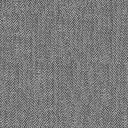
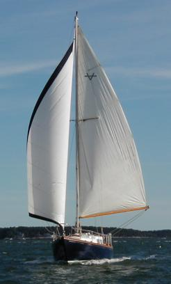
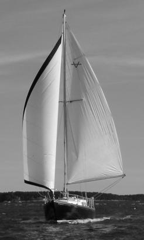
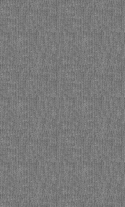

This tutorial assumes a patched version of GIMP 1.2.2. Please don't distribute binaries which include this patch; it creates non-standard XCF files, which would suprise users terribly. Real-world images have lots of noise: film grain, scanner lines, CCD noise, paper texture, and just about anything else you can imagine. Computer-generated images, on the other hand, tend to be too real. If you need to make computer-generated images look like real-world ones, then this tutorial is for you.
Perhaps you've rendered a gorgeous 3D scene, but want to make it look more like a photograph. Perhaps you're compositing two different photos, and need make the grain match. Or maybe you're just perverse.
This is a subject for another, longer tutorial. But here are the basic steps:
- Take a noisy image.
- Duplicate it into a new layer.
- Blur it to remove the noise.
- Set the blurred layer to Grey Subtraction mode to extract the noise. (You need to install the above patch to get this mode.)
- Flatten the image.
- Choose an interesting area of the noise, and make it into a tileable pattern.

Some good ways of making tileable patterns include Make Seamless, the Resynthesizer and Homogenizer, mirroring, and hand-editing. You'll have to experiment a bit. In the following example, we'll use a weird, vertically-striped noise pattern. It looks like some kind of scanner noise, or perhaps an artifact of old newsprint.

First, desaturate the image. You can do this using <Image>/Colors/Desaturate or the Desaturate filter provided with the MathMap plugin. (The latter actually returns the luminosity of an image, not a desaturated version. Technically, it's better, but it's unnecessary for most images.)
 
Next add a new layer to the image, and use the bucket to fill it with your tileable noise.
Position the noise layer above the image layer, and set the mode to Grey Addition. (Again, this won't work unless the patch has been installed.)
So far, so good. But the noise is too strong in the shadows and highlights of the image. To demphasize it, we can use a layer mask.
First, add a layer mask to the noise layer. Then, make a copy of the image, gaussian blur it with a radius of 15 pixels, and paste
the blurred image into the layer mask. Use <Image>/Colors/Invert to swap bright for dark. This will cause the grain to show through
strongly in the shadows and midtones, but not in the highlights.
Next, use
Here's the Layers, Channels & Paths dialog for the finished image.
You can use various brushes in the mask layer to selectively edit the grain. You can also use the bucket tool in Pattern Fill, Grey Addition
mode to fill a selection with grain directly.
Many kinds of noise can be created using <Image>/Filters/Noise/Scatter HSV. You can apply this directly to an image, or to a film grain pattern.
To denoise an image, try <Image>/Filters/Blur/Selective Guassian Blur. It's slow, but very nifty.
The original tutorial can be found here